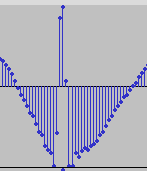
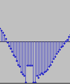

Click removal in audio files with Python
Posted on Tue 23 May 2023 in Audio, Python
A friend of mine had an audio file with many clicks in it. He asked me if I could remove them. I tried with the Audacity click removal tool, but it didn't work: it removed the clicks, but created a lot of artifacts in the audio, so I thought it would be a nice challenge to try to do it with Python.
The waveform looked like this:

I did it using the pydub package. The basic idea is detecting the clicks and replacing them with the previous sample. I used two different criteria to detect the clicks:
-
If the average of the previous samples is below a threshold and the current sample is above another threshold.
-
If the difference between the previous sample and the current one is above a threshold.
The code is not very clean, but it worked. I had to play with the thresholds and the width of the samples to get the best results. I also had to play with the width of the clicks to avoid removing too much audio.
The result was pretty good. The waveform looked like this:

And the audio sounded much better. It was not perfect, but it was good enough.
The code is below. The audio file is not included.
from pydub import AudioSegment
from rich.progress import track
# Read file
FILE_NAME = "original"
audio = AudioSegment.from_file(f"{FILE_NAME}.wav", format="wav")
def big_avg_diff(seq, sample, threshold):
avg = sum(seq) / len(seq)
return avg < -threshold and sample > threshold
# Get samples
samples = audio.get_array_of_samples()
# Declick
num_clicks = 0
width = 2
max_click_width = 20
threshold_avg = 10000
threshold_abs = 18000
i = 10
while i < len(samples):
if (
big_avg_diff(samples[i - width : i], samples[i], threshold_avg)
or abs(samples[i - 1] - samples[i]) > threshold_abs
):
print(f"Found click {num_clicks} at {i:_}: {samples[i - width: i+1]}", end="")
num_clicks += 1
click_width = 0
while (
abs(samples[i] - samples[i - 1]) > threshold_abs
and click_width < max_click_width
):
samples[i] = samples[i - 1]
i += 1
click_width += 1
print(f" (width: {click_width})")
else:
i += 1
print(f"Found {num_clicks} clicks")
# Save new audio from samples
new_audio = audio._spawn(samples)
new_audio.export(f"{FILE_NAME}_declicked.wav", format="wav")